# functions for simulation
generate_data <- function(n_per_condition,
mean_control,
mean_intervention,
sd) {
data_control <-
tibble(condition = "control",
score = rnorm(n = n_per_condition, mean = mean_control, sd = sd))
data_intervention <-
tibble(condition = "intervention",
score = rnorm(n = n_per_condition, mean = mean_intervention, sd = sd))
data_combined <-
bind_rows(data_control,
data_intervention) |>
mutate(condition = factor(condition, level = c("intervention", "control")))
return(data_combined)
}
analyse <- function(data, direction_h1 = "two.sided", alpha = 0.05, mean_difference_h0 = 0){
fit <- t.test(
formula = score ~ condition,
mu = mean_difference_h0,
alternative = direction_h1,
conf.level = 1-alpha,
var.equal = TRUE, # students t test: assumes equal variances
data = data
)
results <- fit %>%
model_parameters() %>%
as_tibble() %>%
janitor::clean_names() %>%
# create estimand
mutate(significant_p = p < .05, # statistically significant in the sense that p < .05
signficiant_ci = !dplyr::between(0, ci_low, ci_high)) |> # statistically significant in the sense that 95% CI excludes a mean difference of 0
# select columns of interest
select(mean_diff = difference,
ci_low,
ci_high,
signficiant_ci,
p,
significant_p)
return(results)
}
# simulation parameters
experiment_parameters <- expand_grid(
n_per_condition = seq(from = 25, to = 100, by = 25),
mean_control = 0,
mean_intervention = c(0, 0.5),
sd = 1,
direction_h1 = "two.sided",
alpha = 0.05,
mean_difference_h0 = 0,
iteration = 1:1000
) |>
mutate(pop_mean_diff = mean_intervention - mean_control)
# run simulation
# results are cached to disk: the simulation is only run the first time, and read back
# in on subsequent renders. delete the .rds file if you change the simulation code.
dir.create("results", showWarnings = FALSE)
if(file.exists("results/simulation_hypothesis_testing.rds")){
simulation <- read_rds("results/simulation_hypothesis_testing.rds")
} else {
# set seed
set.seed(42)
simulation <- experiment_parameters |>
# shuffle the rows of the grid to load balance the computationally expensive
# iterations evenly across the workers
slice_sample(prop = 1) |>
mutate(generated_data = future_pmap(.l = list(n_per_condition = n_per_condition,
mean_control = mean_control,
mean_intervention = mean_intervention,
sd = sd),
.f = generate_data,
.progress = TRUE,
.options = furrr_options(seed = TRUE))) |>
mutate(results = future_pmap(.l = list(data = generated_data),
.f = analyse,
.progress = TRUE,
.options = furrr_options(seed = TRUE))) |>
unnest(results) |>
# undo the shuffle so the rows are back in the order of the experiment grid
arrange(n_per_condition, pop_mean_diff, iteration) |>
# the generated data sets are not needed after they have been analyzed, and
# keeping them would make the saved file enormous
select(-generated_data)
write_rds(x = simulation, file = "results/simulation_hypothesis_testing.rds", compress = "gz")
}
# calculate summary
results_summary <- simulation |>
group_by(pop_mean_diff,
n_per_condition) |>
reframe(mean_difference_in_means = mean(mean_diff),
mean_ci_low = mean(ci_low),
mean_ci_high = mean(ci_high),
# rather than calculating the proportion of significant results by hand, use
# {simhelpers}'s dedicated function for the empirical rejection rate.
# calc_rejection() also returns the number of iterations and the Monte Carlo
# Standard Error of the rate; select() keeps and renames just the rate itself
calc_rejection(data = pick(everything()),
p_values = p,
alpha = 0.05) |>
select(proportion_significant_p = rej_rate))13 Hypothesis Testing
13.1 Hypothesis testing using p-values vs. Confidence Intervals
Are inferences from p values and 95% CIs the same?
Let’s simulate some data for a between groups RCT, fit an independent t-test, and extract p values, estimated mean differences and its confidence intervals.
simulation |>
count(signficiant_ci == significant_p, name = "n_iterations") |>
mutate(percent_agreement = n_iterations/sum(n_iterations)*100)| signficiant_ci == significant_p | n_iterations | percent_agreement |
|---|---|---|
| TRUE | 8000 | 100 |
simulation |>
count(signficiant_ci, significant_p)| signficiant_ci | significant_p | n |
|---|---|---|
| FALSE | FALSE | 4836 |
| TRUE | TRUE | 3164 |
Yes! 95% CIs and p values can express the same underlying information.
13.2 Estimation vs. hypothesis testing
Recall from the previous chapter on estimation and precision that CIs also tell us about precision of the estimate (whereas p-values do not).
Show code
ggplot(results_summary, aes(n_per_condition*2, mean_difference_in_means)) +
geom_point() +
geom_linerange(aes(ymin = mean_ci_low, ymax = mean_ci_high)) +
geom_hline(yintercept = 0, linetype = "dotted") +
scale_x_continuous(breaks = breaks_pretty(n = 4),
name = "Total sample size per study") +
scale_y_continuous(breaks = breaks_pretty(n = 5),
#limits = c(0,1),
name = "Mean sample difference-in-means\n(and mean 95% CIs)") +
theme_linedraw() +
facet_wrap(~ pop_mean_diff)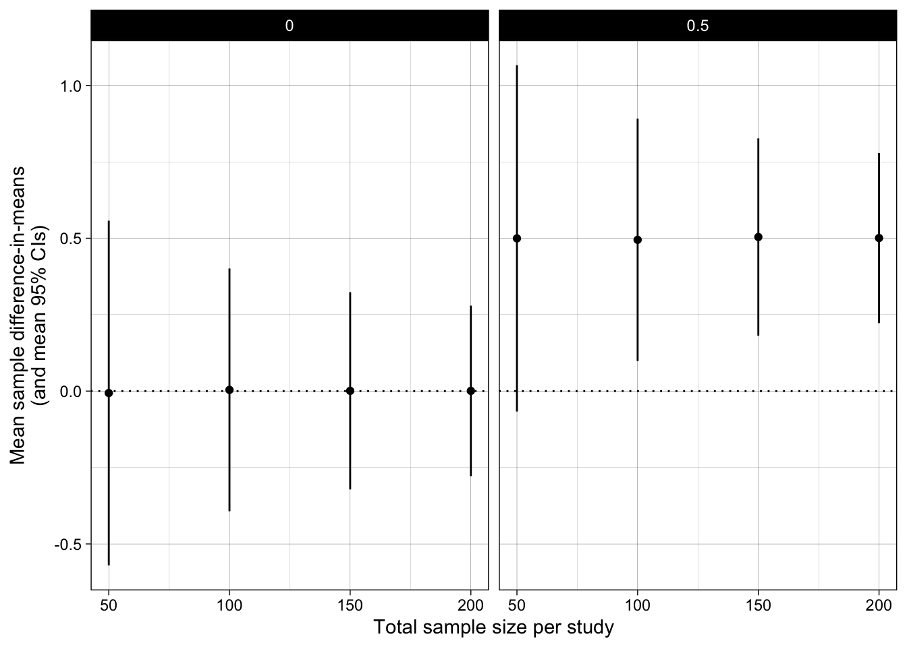
An estimation approach quantifies parameters (e.g., the sample mean difference) and the uncertainty around it (e.g., the 95% CI). The 95% CI allows us to make inferences about the population difference in means.
A hypothesis testing approach reduces this information down to a binary acceptance or rejection of a (null) hypothesis. For example, the typical Null Hypothesis Significance Test (NHST) of whether we should infer from this that the population has some property, such as being non-zero.
The t-test 1) estimates the difference in means and 2) allows us to test hypotheses whether the population difference in means is non-zero.
For example:
- Estimation: The sample difference in means was estimated as \(M_{diff}\) = 0.83, 95% CI = [0.24, 1.41].
- Hypothesis testing: Using alpha = .05, we reject the null hypothesis that the population mean difference is 0, p = .006, 95% CI excludes 0.
13.3 What are alpha and power?
Show code
# table
results_summary |>
select(pop_mean_diff,
n_per_condition,
proportion_significant_p) |>
mutate_if(is.numeric, round, digits = 2)| pop_mean_diff | n_per_condition | proportion_significant_p |
|---|---|---|
| 0.0 | 25 | 0.05 |
| 0.0 | 50 | 0.07 |
| 0.0 | 75 | 0.05 |
| 0.0 | 100 | 0.05 |
| 0.5 | 25 | 0.40 |
| 0.5 | 50 | 0.73 |
| 0.5 | 75 | 0.87 |
| 0.5 | 100 | 0.94 |
Show code
# plot
ggplot(results_summary, aes(n_per_condition*2, proportion_significant_p)) +
geom_point() +
geom_hline(yintercept = 0.05, linetype = "dotted") +
geom_hline(yintercept = 0.80, linetype = "dotted") +
scale_x_continuous(breaks = breaks_pretty(n = 4),
name = "Total sample size") +
scale_y_continuous(breaks = c(0, .05, .2, .4, .6, .8, 1),
limits = c(0,1),
name = "Proportion of significant p-values") +
theme_linedraw() +
theme(panel.grid.minor = element_blank()) +
facet_wrap(~ pop_mean_diff)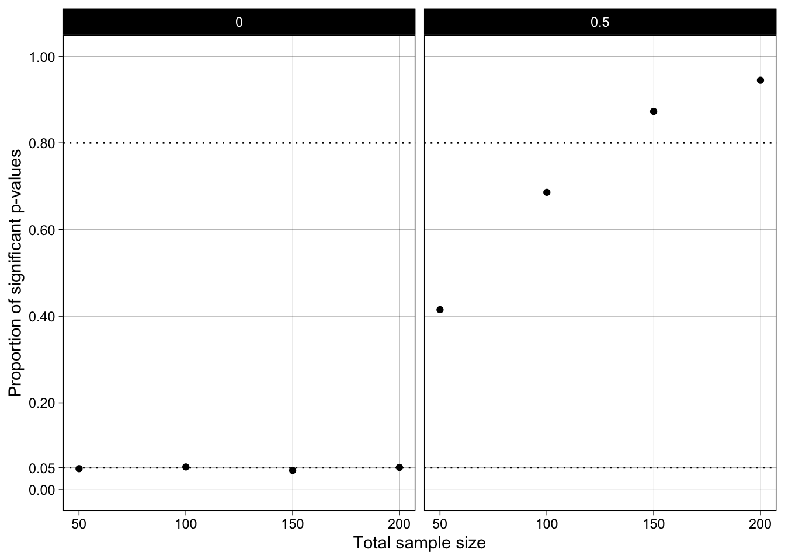
Note that there is nothing special about 5% alpha / 95% Confidence Interval; these are just conventions. We could instead compare a 2.5% alpha vs. the 97.5% CI.
How to interpret proportion_significant_p? Well, it depends on whether the population effect exists or not.
| Test is Positive | Test is Negative | |
|---|---|---|
| Actual Positive | True Positive (TP) | False Negative (FN) |
| Actual Negative | False Positive (FP) | True Negative (TN) |
For the moment, let’s use a classic two-sided Null Hypothesis Significance Test for whether the difference in means is zero (H0) or non-zero (H1):
| p < .05 | p ≥ .05 | |
|---|---|---|
| Population effect is non-zero | True Positive (TP) | False Negative (FN) |
| Population effect is zero | False Positive (FP) | True Negative (TN) |
- True Positive (TP): aka hit
- False Positive (FP): aka false alarm, Type I error, alpha
- False Negative (FN): aka miss, Type II error, (1-statistical power)
- True Negative (TN): aka correct rejection
Statistical power is the probability of detecting an effect, assuming that effect exists in the population.
Show code
ggplot(simulation, aes(p)) +
geom_histogram(binwidth = 0.05, boundary = 0, fill = "grey", color = "black") +
geom_vline(xintercept = 0.05, color = "red") +
scale_x_continuous(labels = c(0, 0.05, 0.25, 0.50, 0.75, 1.0),
breaks = c(0, 0.05, 0.25, 0.50, 0.75, 1.0),
limits = c(0, 1)) +
scale_y_continuous(breaks = breaks_pretty(n = 5)) +
theme_linedraw() +
ylab("Frequency") +
xlab("p value") +
facet_wrap(~ pop_mean_diff,
#scales = "free_y",
ncol = 1)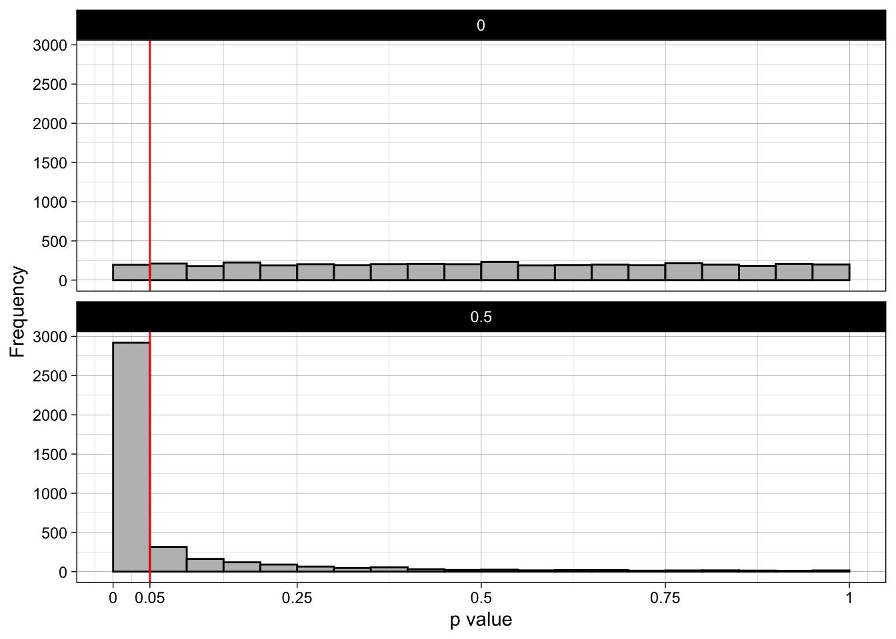
Show code
ggplot(simulation, aes(p)) +
geom_histogram(binwidth = 0.05, boundary = 0, fill = "grey", color = "black") +
geom_vline(xintercept = 0.05, color = "red") +
scale_x_continuous(labels = c(0, 0.05, 0.25, 0.50, 0.75, 1.0),
breaks = c(0, 0.05, 0.25, 0.50, 0.75, 1.0),
limits = c(0, 1)) +
scale_y_continuous(breaks = breaks_pretty(n = 5)) +
theme_linedraw() +
ylab("Frequency") +
xlab("p value") +
facet_grid(n_per_condition ~ pop_mean_diff)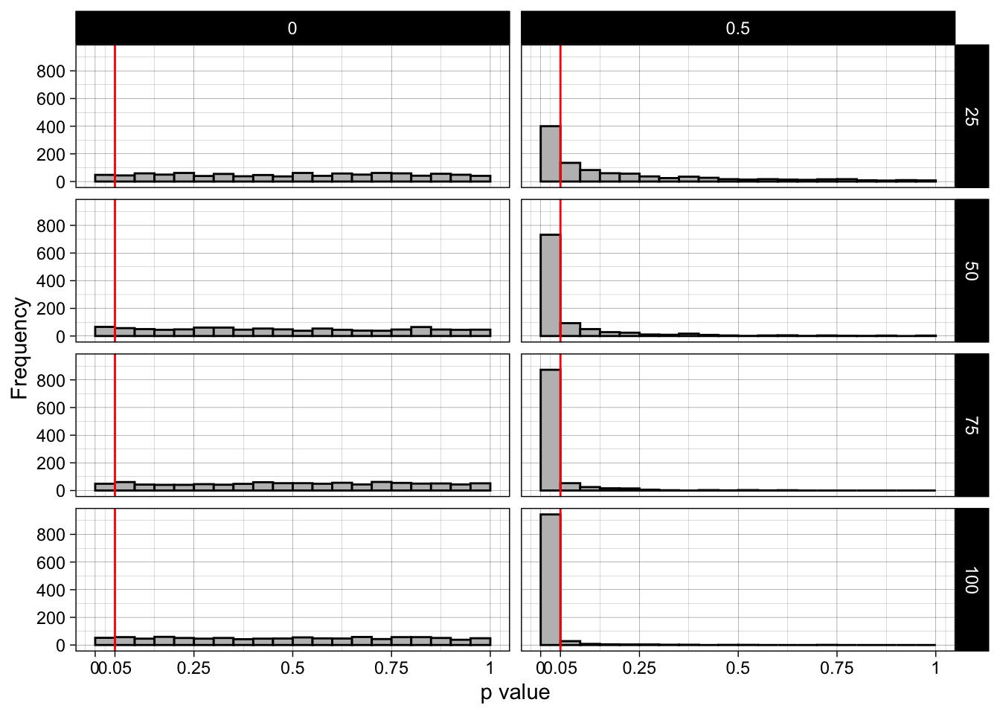
Show code
ggplot(simulation, aes(p, iteration)) +
geom_point(color = "grey50", size = 0.5) +
geom_vline(xintercept = 0.05, color = "red", linetype = "dashed") +
scale_fill_viridis_d(option = "mako", begin = 0.3, end = 0.7, direction = -1) +
scale_x_continuous(labels = c(0, 0.05, 0.25, 0.50, 0.75, 1.0),
breaks = c(0, 0.05, 0.25, 0.50, 0.75, 1.0),
limits = c(0, 1)) +
scale_y_continuous(breaks = breaks_pretty(n = 5)) +
theme_linedraw() +
ylab("Iteration") +
xlab("p value") +
facet_grid(n_per_condition ~ pop_mean_diff)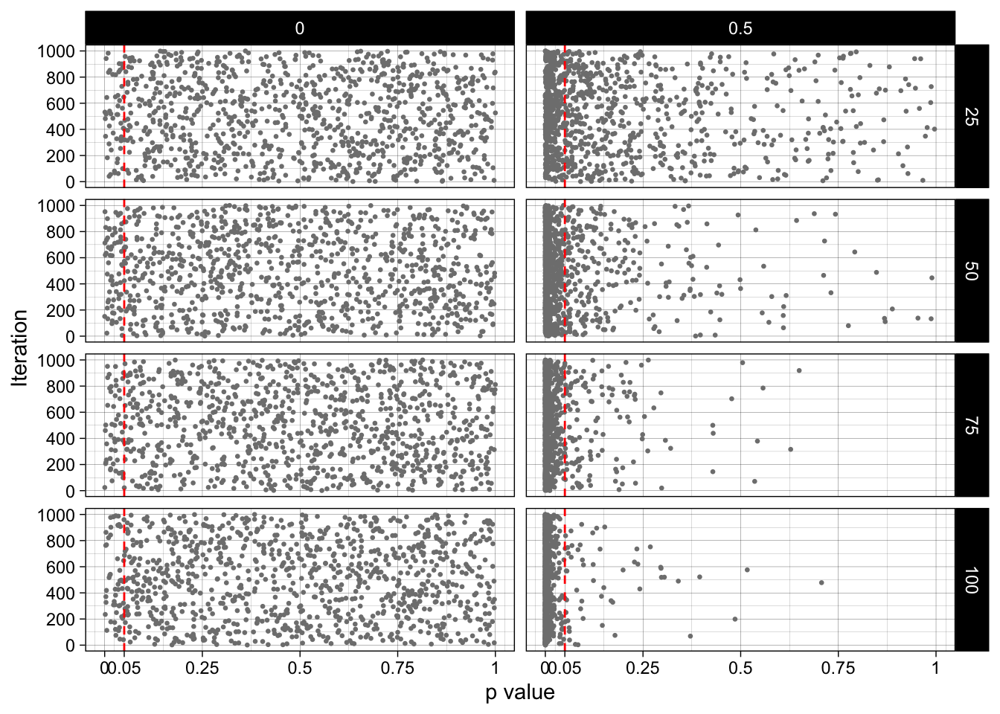
Dynamic visualization of how p-values flow towards 0 as sample size and true effect size increase: rpsychologist.com/d3/pdist.
13.4 Barely-significant results (p between .02 and .05) are rare in well-powered studies
Show code
ggplot(simulation, aes(p)) +
geom_histogram(binwidth = 0.0025, boundary = 0, fill = "grey", color = "black") +
geom_vline(xintercept = 0.05, color = "red") +
scale_x_continuous(labels = c(0, 0.05, 0.25, 0.50, 0.75, 1.0),
breaks = c(0, 0.05, 0.25, 0.50, 0.75, 1.0),
limits = c(0, 1)) +
scale_y_continuous(breaks = breaks_pretty(n = 5)) +
xlim(0, 0.05) +
theme_linedraw() +
ylab("Frequency") +
xlab("p value") +
facet_grid(n_per_condition ~ pop_mean_diff)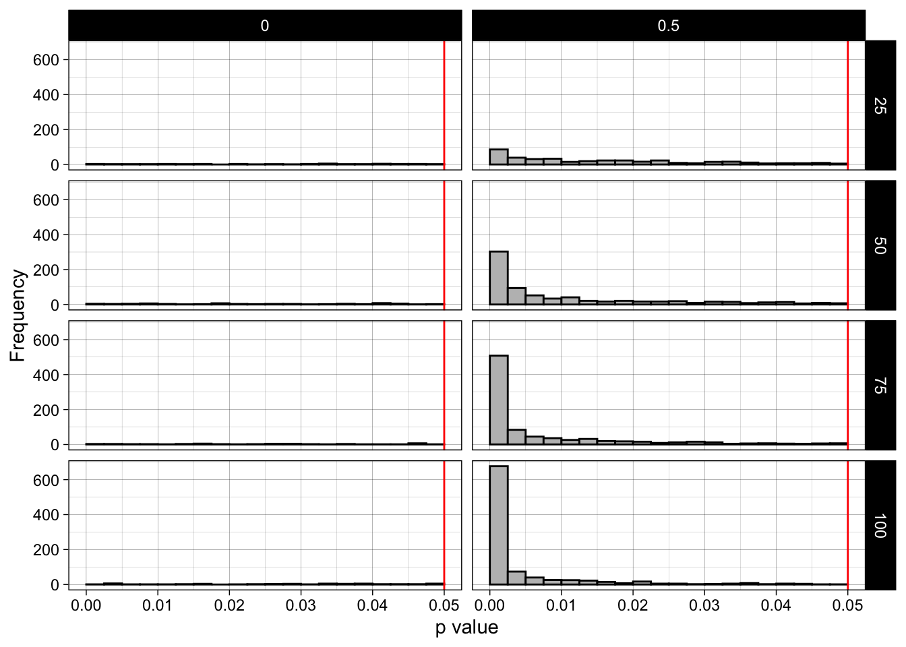
13.5 Other forms of hypothesis testing
To a problematic degree, psychology research tends to test the null hypothesis of “population effect = 0”. Note that the ‘null’ hypothesis is not inherently the ‘zero’ hypothesis: we could use any reference value. In many cases, our research question is more aligned with testing against a non-zero null hypothesis. See Lakens et al. (2018) “Equivalence Testing for Psychological Research: A Tutorial”.
13.5.1 Illustrations
We will work through these examples verbally in class.
13.5.1.1 Classic NHST (Two-Sided)
Show code
xlims <- c(-3, 3)
fill_col <- "#F4C2A1"
h_size <- 5
theme_panel <- theme_minimal(base_size = 14) +
theme(
panel.grid = element_blank(),
axis.text.y = element_blank(),
axis.ticks.y = element_blank(),
axis.title.y = element_blank(),
axis.line.x = element_line(colour = "black", linewidth = 0.5),
axis.ticks.x = element_line(colour = "black"),
axis.ticks.length = unit(0.15, "cm"),
plot.title = element_text(hjust = 0.5, face = "plain", size = 14),
plot.margin = margin(5, 15, 5, 15)
)
# --- Classic NHST (Two-Sided) ---
p_classical_twosided <- ggplot() +
annotate("rect", xmin = -0.025, xmax = 0.025, ymin = 0, ymax = 1,
fill = fill_col, colour = NA) +
annotate("text", x = -1.5, y = 0.5, label = "italic(H)[1]", parse = TRUE, size = h_size) +
annotate("text", x = 1.5, y = 0.5, label = "italic(H)[1]", parse = TRUE, size = h_size) +
annotate("text", x = 0.2, y = 0.5, label = "italic(H)[0]", parse = TRUE, size = h_size) +
# annotate("segment", x = 0, xend = 0, y = 0.73, yend = 0.05,
# arrow = arrow(length = unit(0.2, "cm"), type = "closed"), linewidth = 0.5) +
geom_vline(xintercept = 0, linetype = "dashed", linewidth = 0.4) +
scale_x_continuous(breaks = 0, labels = "0", limits = xlims) +
scale_y_continuous(limits = c(0, 1)) +
labs(title = "Classic Null-Hypothesis Significance Test (Two-Sided)", x = "Effect Size") +
theme_panel
p_classical_twosided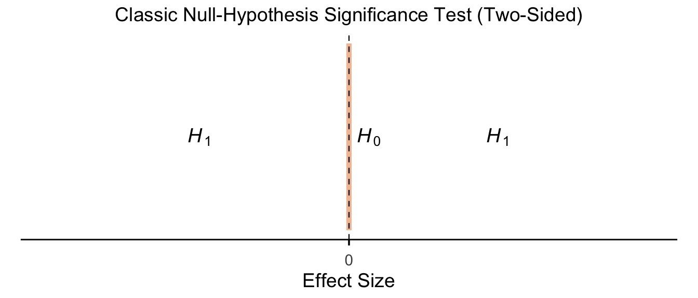
13.5.1.2 Classic NHST (One-Sided)
Show code
p_classical_onesided <- ggplot() +
annotate("rect", xmin = -3, xmax = 0, ymin = 0, ymax = 1,
fill = fill_col, colour = NA) +
annotate("text", x = -1.5, y = 0.5, label = "italic(H)[0]", parse = TRUE, size = h_size) +
annotate("text", x = 1.5, y = 0.5, label = "italic(H)[1]", parse = TRUE, size = h_size) +
geom_vline(xintercept = 0, linetype = "dashed", linewidth = 0.4) +
scale_x_continuous(breaks = 0, labels = "0", limits = xlims) +
scale_y_continuous(limits = c(0, 1)) +
labs(title = "Classic Null-Hypothesis Significance Test (One-Sided)", x = "Effect Size") +
theme_panel
p_classical_onesided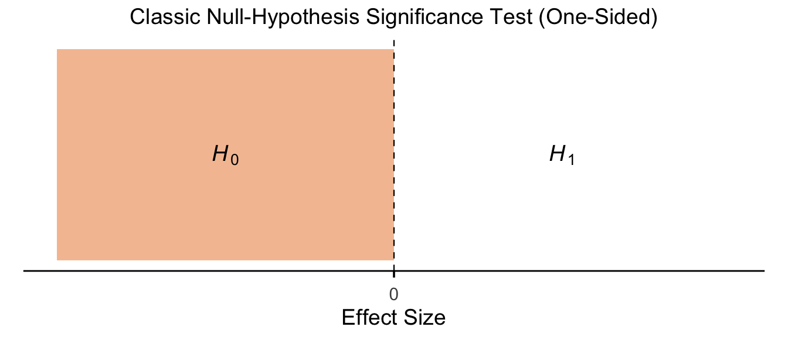
13.5.1.3 Minimal-Effects Test (Two-Sided)
Show code
p_minimaleffect_twosided <- ggplot() +
annotate("rect", xmin = -0.8, xmax = 0.8, ymin = 0, ymax = 1,
fill = fill_col, colour = NA) +
geom_vline(xintercept = c(-0.8, 0.8), linetype = "dashed", linewidth = 0.4) +
annotate("text", x = -2, y = 0.5, label = "italic(H)[1]", parse = TRUE, size = h_size) +
annotate("text", x = 0, y = 0.5, label = "italic(H)[0]", parse = TRUE, size = h_size) +
annotate("text", x = 2, y = 0.5, label = "italic(H)[1]", parse = TRUE, size = h_size) +
scale_x_continuous(
breaks = c(-0.8, 0, 0.8),
labels = c(expression(Delta[L]), "0", expression(Delta[U])),
limits = xlims
) +
scale_y_continuous(limits = c(0, 1)) +
labs(title = "Minimal-Effects Test (Two-Sided)", x = "Effect Size") +
theme_panel
p_minimaleffect_twosided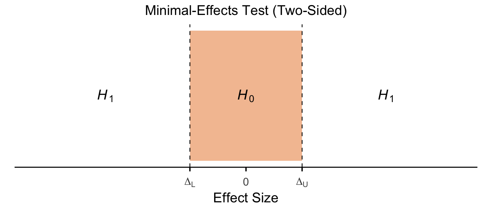
13.5.1.4 Minimal-Effects Test (One-Sided)
Show code
p_minimaleffect_onesided <- ggplot() +
annotate("rect", xmin = -3, xmax = 0.8, ymin = 0, ymax = 1,
fill = fill_col, colour = NA) +
geom_vline(xintercept = 0.8, linetype = "dashed", linewidth = 0.4) +
annotate("text", x = -1, y = 0.5, label = "italic(H)[0]", parse = TRUE, size = h_size) +
annotate("text", x = 2, y = 0.5, label = "italic(H)[1]", parse = TRUE, size = h_size) +
scale_x_continuous(
breaks = c(0, 0.8),
labels = c("0", expression(Delta)),
limits = xlims
) +
scale_y_continuous(limits = c(0, 1)) +
labs(title = "Minimal-Effects Test (One-Sided)", x = "Effect Size") +
theme_panel
p_minimaleffect_onesided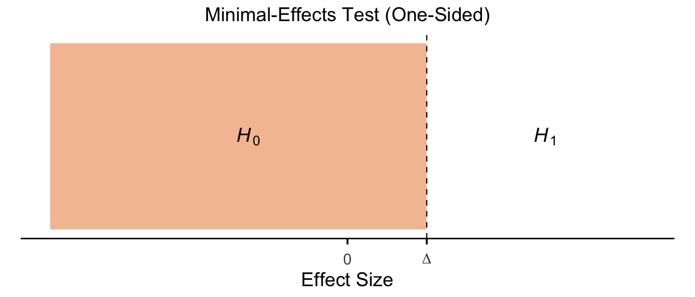
13.5.1.5 Inferiority Test (necessarily One-Sided)
Show code
p_inferiority <- ggplot() +
annotate("rect", xmin = 0.8, xmax = 3, ymin = 0, ymax = 1,
fill = fill_col, colour = NA) +
geom_vline(xintercept = 0.8, linetype = "dashed", linewidth = 0.4) +
annotate("text", x = -1, y = 0.5, label = "italic(H)[1]", parse = TRUE, size = h_size) +
annotate("text", x = 2, y = 0.5, label = "italic(H)[0]", parse = TRUE, size = h_size) +
scale_x_continuous(
breaks = c(0, 0.8),
labels = c("0", expression(Delta)),
limits = xlims
) +
scale_y_continuous(limits = c(0, 1)) +
labs(title = "Inferiority Test (necessarily one-sided)", x = "Effect Size") +
theme_panel
p_inferiority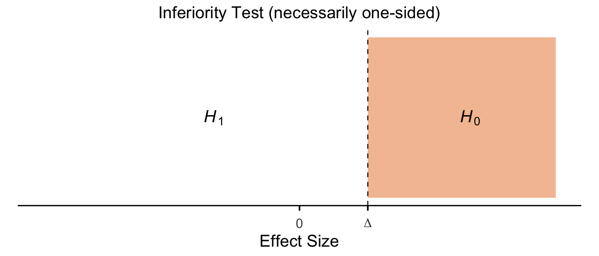
13.5.1.6 Equivalence Test (necessarily Two-Sided)
This is achieved using two one-sided independent t-tests, and is therefore referred to as a Two One-Sided Test (TOST: Lakens et al. (2018) “Equivalence Testing for Psychological Research: A Tutorial”).
H1 is defined not as a single point value (e.g., 0 as in classic NHST) but a region of values (e.g., -1 to +1) within which the effect is said to be practically equivalent to zero. This region is referred to as the Smallest Effect Size of Interest (SESOI).
Show code
p_equivalence <- ggplot() +
annotate("rect", xmin = -3, xmax = -0.8, ymin = 0, ymax = 1,
fill = fill_col, colour = NA) +
annotate("rect", xmin = 0.8, xmax = 3, ymin = 0, ymax = 1,
fill = fill_col, colour = NA) +
geom_vline(xintercept = c(-0.8, 0.8), linetype = "dashed", linewidth = 0.4) +
annotate("text", x = -2, y = 0.5, label = "italic(H)[0]", parse = TRUE, size = h_size) +
annotate("text", x = 0, y = 0.5, label = "italic(H)[1]", parse = TRUE, size = h_size) +
annotate("text", x = 2, y = 0.5, label = "italic(H)[0]", parse = TRUE, size = h_size) +
scale_x_continuous(
breaks = c(-0.8, 0, 0.8),
labels = c(expression(Delta[L]), "0", expression(Delta[U])),
limits = xlims
) +
scale_y_continuous(limits = c(0, 1)) +
labs(title = "Equivalence Test (necessarily Two-Sided)", x = "Effect Size") +
theme_panel
p_equivalence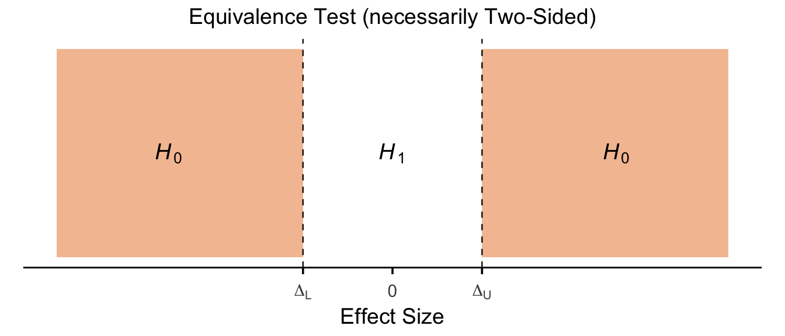
13.5.2 Check your learning
What type of hypothesis test does each plot present?
What inference should you make for each study, using each type of hypothesis test?
We will work through these examples verbally in class.
Show code
dat <- tibble(study = factor(c(1, 2, 3, 4, 5, 7)),
mean_difference = c(0.05, 0.05, 1.6, 1.6, -1.1, 0.5),
ci_width = c(0.3, 1.1, 1, 0.5, 0.8, 0.3))
ggplot(dat, aes(mean_difference, study)) +
annotate("rect", xmin = -.025, xmax = .025, ymin = -Inf, ymax = Inf,
fill = fill_col, alpha = 0.5, colour = NA) +
geom_vline(xintercept = 0, linetype = "dashed") +
geom_point() +
geom_linerangeh(aes(xmin = mean_difference-ci_width, xmax = mean_difference+ci_width)) +
xlab("Mean difference (95% CI)") +
ylab("Study") +
ggtitle("Orange Area = Null Hypothesis (H0)") +
theme_linedraw() 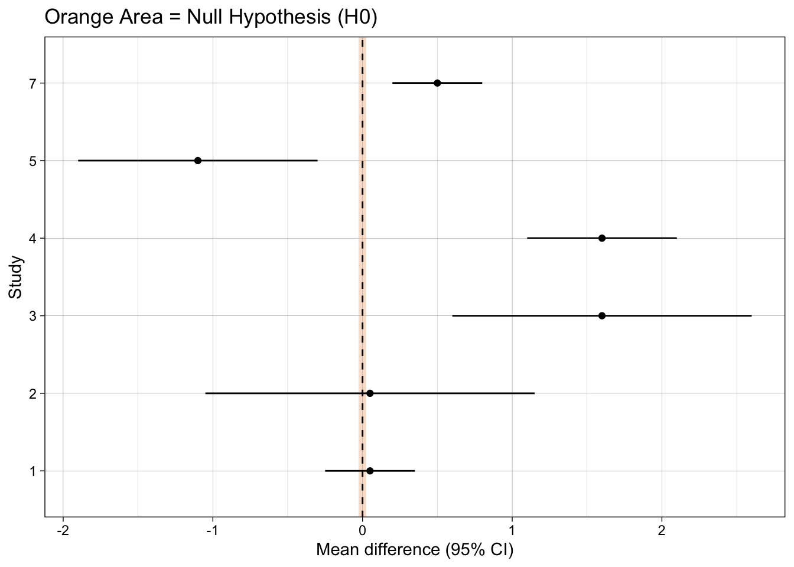
Show code
ggplot(dat, aes(mean_difference, study)) +
annotate("rect", xmin = -Inf, xmax = 0, ymin = -Inf, ymax = Inf,
fill = fill_col, alpha = 0.5, colour = NA) +
geom_vline(xintercept = 0, linetype = "dashed") +
geom_point() +
geom_linerangeh(aes(xmin = mean_difference-ci_width, xmax = mean_difference+ci_width)) +
xlab("Mean difference (95% CI)") +
ylab("Study") +
ggtitle("Orange Area = Null Hypothesis (H0)") +
theme_linedraw() 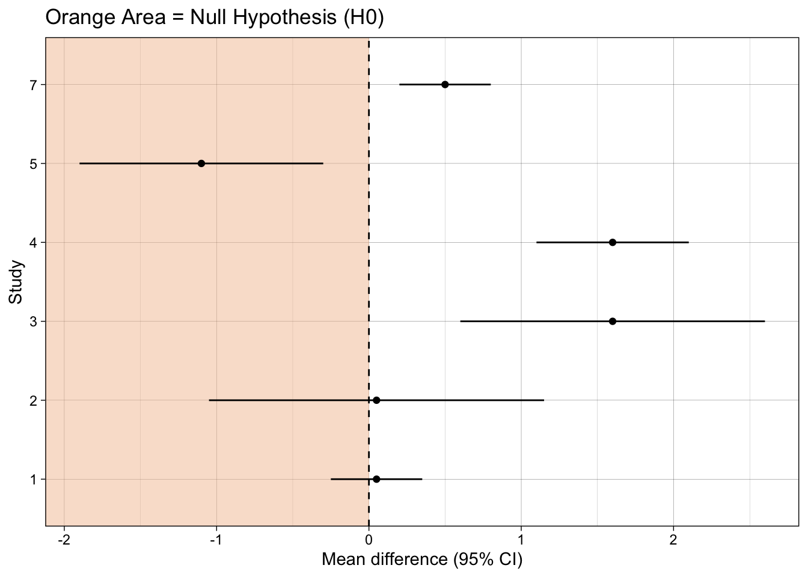
Show code
ggplot(dat, aes(mean_difference, study)) +
annotate("rect", xmin = -1, xmax = 1, ymin = -Inf, ymax = Inf,
fill = fill_col, alpha = 0.5, colour = NA) +
geom_vline(xintercept = -1, linetype = "dashed") +
geom_vline(xintercept = 1, linetype = "dashed") +
geom_point() +
geom_linerangeh(aes(xmin = mean_difference-ci_width, xmax = mean_difference+ci_width)) +
xlab("Mean difference (95% CI)") +
ylab("Study") +
ggtitle("Orange Area = Null Hypothesis (H0)") +
theme_linedraw() 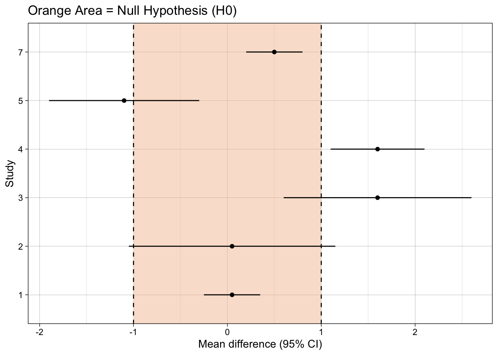
Show code
ggplot(dat, aes(mean_difference, study)) +
annotate("rect", xmin = -Inf, xmax = 1, ymin = -Inf, ymax = Inf,
fill = fill_col, alpha = 0.5, colour = NA) +
geom_vline(xintercept = 1, linetype = "dashed") +
geom_point() +
geom_linerangeh(aes(xmin = mean_difference-ci_width, xmax = mean_difference+ci_width)) +
xlab("Mean difference (95% CI)") +
ylab("Study") +
ggtitle("Orange Area = Null Hypothesis (H0)") +
theme_linedraw() 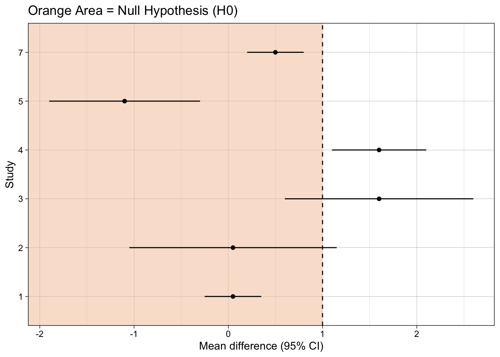
Show code
ggplot(dat, aes(mean_difference, study)) +
annotate("rect", xmin = 1, xmax = Inf, ymin = -Inf, ymax = Inf,
fill = fill_col, alpha = 0.5, colour = NA) +
geom_vline(xintercept = 1, linetype = "dashed") +
geom_point() +
geom_linerangeh(aes(xmin = mean_difference-ci_width, xmax = mean_difference+ci_width)) +
xlab("Mean difference (95% CI)") +
ylab("Study") +
ggtitle("Orange Area = Null Hypothesis (H0)") +
theme_linedraw() 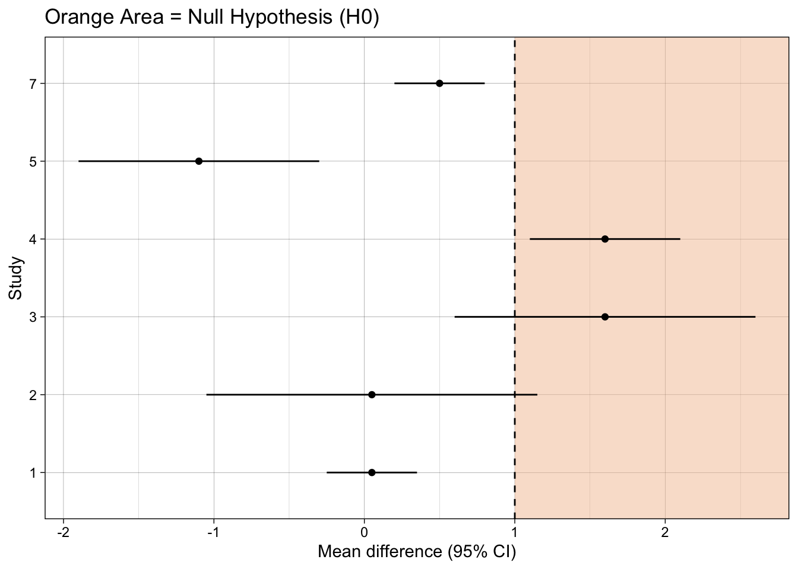
Show code
ggplot(dat, aes(mean_difference, study)) +
annotate("rect", xmin = 1, xmax = Inf, ymin = -Inf, ymax = Inf,
fill = fill_col, alpha = 0.5, colour = NA) +
annotate("rect", xmin = -Inf, xmax = -1, ymin = -Inf, ymax = Inf,
fill = fill_col, alpha = 0.5, colour = NA) +
geom_vline(xintercept = 1, linetype = "dashed") +
geom_vline(xintercept = -1, linetype = "dashed") +
geom_point() +
geom_linerangeh(aes(xmin = mean_difference-ci_width, xmax = mean_difference+ci_width)) +
xlab("Mean difference (95% CI)") +
ylab("Study") +
ggtitle("Orange Area = Null Hypothesis (H0)") +
theme_linedraw() 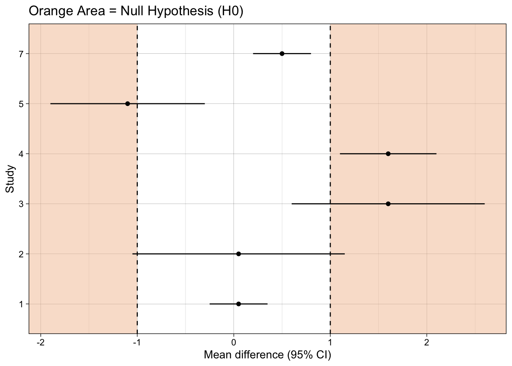
Show code
ggplot(dat, aes(mean_difference, study)) +
annotate("rect", xmin = -.025, xmax = .025, ymin = -Inf, ymax = Inf,
fill = fill_col, alpha = 0.5, colour = NA) +
geom_vline(xintercept = 0, linetype = "dashed") +
annotate("rect", xmin = 1, xmax = Inf, ymin = -Inf, ymax = Inf,
fill = fill_col, alpha = 0.5, colour = NA) +
annotate("rect", xmin = -Inf, xmax = -1, ymin = -Inf, ymax = Inf,
fill = fill_col, alpha = 0.5, colour = NA) +
geom_vline(xintercept = 1, linetype = "dashed") +
geom_vline(xintercept = -1, linetype = "dashed") +
geom_point() +
geom_linerangeh(aes(xmin = mean_difference-ci_width, xmax = mean_difference+ci_width)) +
xlab("Mean difference (95% CI)") +
ylab("Study") +
ggtitle("Orange Area = Null Hypothesis (H0)") +
theme_linedraw() 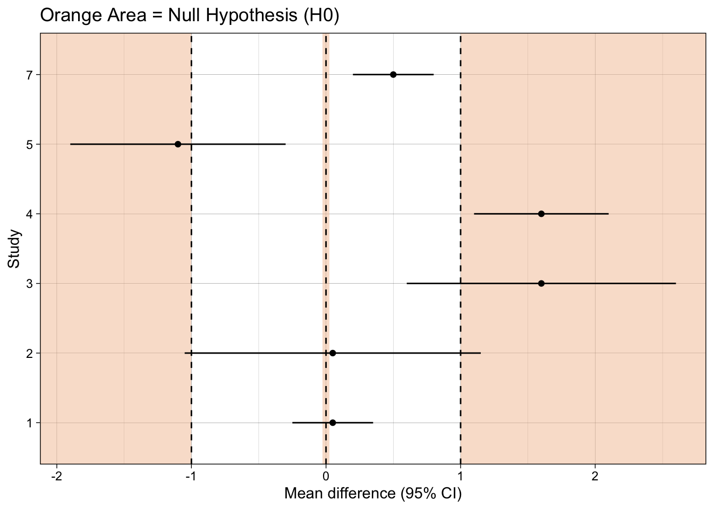